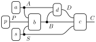
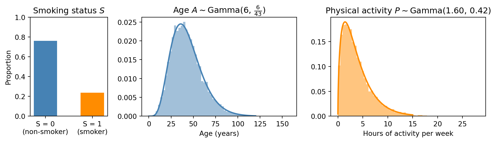
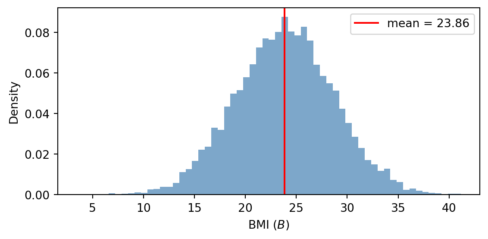
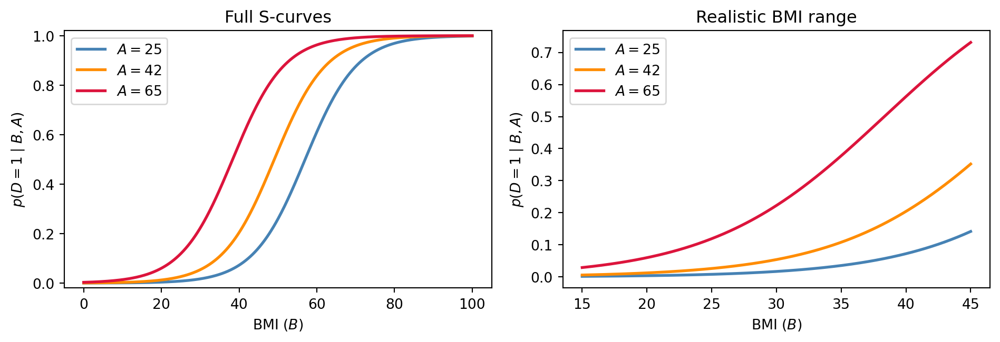
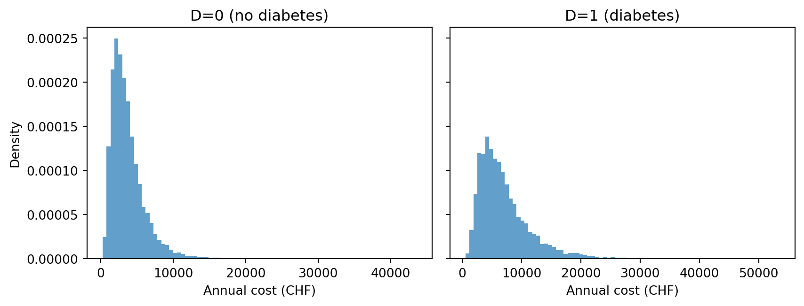
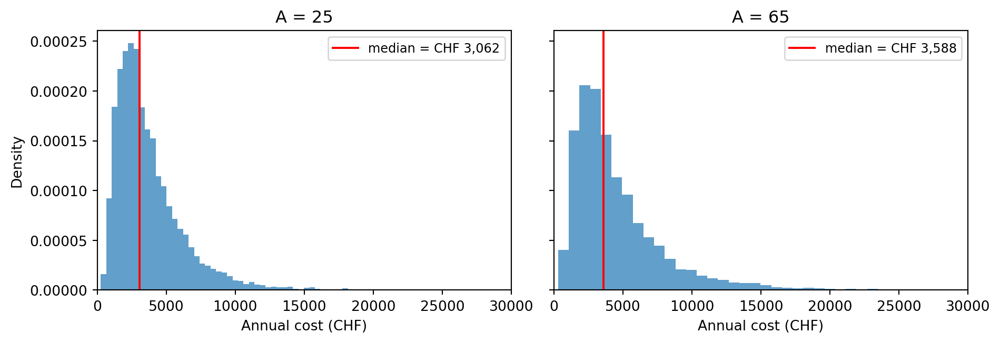
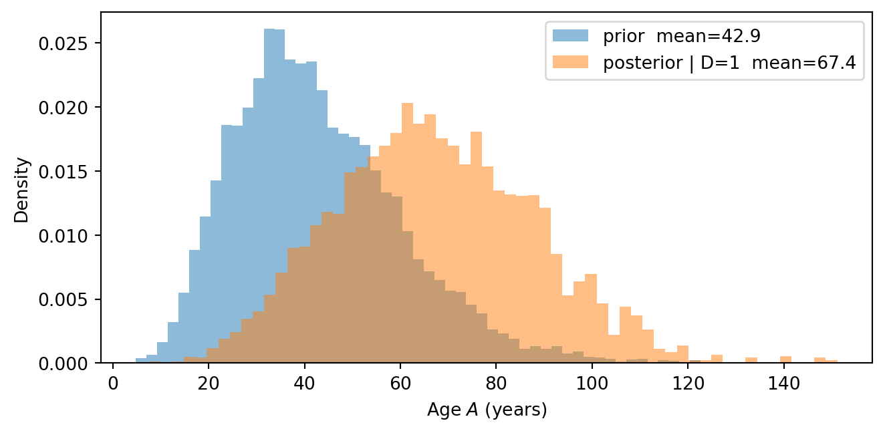

import torch
import torch.distributions as dist
import matplotlib.pyplot as plt
from weighted_sampling import model, sample, observe, deterministic, summary, expectation
torch.manual_seed(42)Exercise 6: Swiss health
\[ \def\then{\mathbin{;}} \def\kernel{\rightsquigarrow} \def\ivmark#1{[\![#1]\!]} \]
This exercise applies the parametric kernels from the chapter on hybrid models to a concrete example: a model of six Swiss health variables relating lifestyle factors to disease risk and healthcare costs. We proceed in three stages: first exploring each regression kernel individually, then writing the complete model, and finally conditioning on observed evidence.
NotePrerequisites: Python libraries
This exercise uses the following libraries:
WeightedSampling.torch — for probabilistic programming and inference. Install via:
pip install git+https://github.com/MariusFurter/WeightedSampling.torch.gitPyTorch — for tensor operations. A short tutorial can be found in the Appendix.
matplotlib — for plotting.
If any packages are missing, run pip install torch matplotlib in your terminal.
The Swiss health model
We aim to model the following six variables:
| Variable | Symbol | Type |
|---|---|---|
| Smoking status | \(S\) | \(\{0,1\}\) |
| Age | \(A\) | \(\mathbb{R}_{\geq 0}\) |
| Physical activity (hours per week) | \(P\) | \(\mathbb{R}_{\geq 0}\) |
| BMI | \(B\) | \(\mathbb{R}_{>0}\) |
| Diabetes | \(D\) | \(\{0,1\}\) |
| Healthcare costs (paid claims per person-year) | \(C\) | \(\mathbb{R}_{>0}\) |
Smoking status, age, and physical activity are root variables with no parents. Together they influence BMI through a linear regression kernel. BMI and age jointly determine diabetes risk through a logistic regression kernel. Finally, diabetes status, smoking status, and BMI jointly determine healthcare costs through a log-normal regression kernel:

The root distributions are sourced from published Swiss statistics (see below). The regression coefficients are reasonable choices calibrated so that the model reproduces the target summary statistics in Part 2. We will see later in the course how such coefficients can be learned from data.
Root distributions
The three root variables are specified by marginal distributions:
- Smoking \(S \sim \mathsf{Bernoulli}(0.24)\).
- Age \(A \sim \mathsf{Gamma}(6,\, \tfrac{6}{43})\), with mean \(43\) and standard deviation \(\approx 17.5\).
- Physical activity \(P \sim \mathsf{Gamma}(1.60,\, 0.42)\), with mean \(\approx 3.8\) and standard deviation \(\approx 3.0\), measured in hours of sport per week.
NoteData sources for root distributions
- Smoking. BFS Taschenstatistik 2025 reports 27% (men) and 21% (women); we use the average \(0.24\).
- Age. The Gamma approximates the right-skewed adult age distribution. BFS-reported median ages are 41.9 years (men) and 44.0 years (women), giving a combined median of \(\approx 43\) years.
- Physical activity. Parameters moment-matched to the Sport Schweiz 2020 weekly hours distribution (never 16%, <2h 10%, 2h 15%, 3–4h 25%, 5–6h 16%, 7+h 18%) using all six category midpoints 0, 1, 2, 3.5, 5.5, and 9 hours. Note: the Gamma distribution has support \((0,\infty)\) and cannot represent the 16% point mass at \(P=0\); the fitted distribution approximates but underweights the never-exerciser group.
Setup
NoteTorch compatibility reminder
All computations on sampled tensors must use torch-compatible operations — torch.sigmoid(x) not math.sigmoid(x), .float() before arithmetic on boolean tensors, etc. See the appendix for details.
Part 0: Visualizing the root distributions
Before building the regression kernels, it is useful to visualize the three root distributions to develop intuition for the range of inputs the model will encounter.
Task 0 — Plot the root distributions.
Write @model root_distributions() that samples \(S\), \(A\), \(P\) from their respective root distributions. Run with 10,000 particles and produce a figure with three panels:
- A bar chart of \(S\) showing \(P(S=0)\) and \(P(S=1)\).
- A histogram of \(A\) with the theoretical \(\mathsf{Gamma}(6,\, \tfrac{6}{43})\) density overlaid. Use
torch.linspaceto create a grid of values anddist.Gamma(...).log_prob(grid).exp()to compute the density. - A histogram of \(P\) with the theoretical \(\mathsf{Gamma}(1.60,\, 0.42)\) density overlaid.
Bonus: Look up the actual age distribution of Swiss adults. How does this compare to the Gamma distribution used in the model?
TipSolution
@model
def root_distributions():
S = sample("S", dist.Bernoulli(0.24))
A = sample("A", dist.Gamma(6.0, 6.0/43.0))
P = sample("P", dist.Gamma(1.60, 0.42))
result_roots = root_distributions(num_particles=10_000)
print(summary(result_roots))
S_vals = result_roots["S"]
A_vals = result_roots["A"]
P_vals = result_roots["P"]SMC Summary (N=10000, log_evidence=0.0000, ESS=10000.0)
│ █ ▂ │ ▁▃▆█▇▃▂▁ │ ▇█▆▂▂▁ │
│ S │ A │ P │
──────────┼────────────────┼────────────────┼────────────────┤
mean │ 0.2378 │ 42.8751 │ 3.8131 │
std │ 0.4257 │ 17.4401 │ 3.0297 │
n_unique │ 2 │ 9996 │ 10000 │Code
fig, axes = plt.subplots(1, 3, width_ratios=[1, 2, 2], figsize=(10, 3))
# S: bar chart
axes[0].bar(
[0, 1],
[expectation(result_roots, lambda S: (S == 0).float()).item(),
expectation(result_roots, lambda S: (S == 1).float()).item()],
color=["steelblue", "darkorange"],
width=0.5,
)
axes[0].set_xticks([0, 1])
axes[0].set_xticklabels(["S = 0\n(non-smoker)", "S = 1\n(smoker)"])
axes[0].set_ylabel("Proportion")
axes[0].set_title("Smoking status $S$")
axes[0].set_ylim(0, 1)
# A: histogram + theoretical density
A_grid = torch.linspace(1e-3, 120, 500)
A_density = dist.Gamma(6.0, 6.0 / 43.0).log_prob(A_grid).exp()
axes[1].hist(A_vals, bins=60, density=True, alpha=0.5, color="steelblue")
axes[1].plot(A_grid, A_density, color="steelblue", linewidth=2)
axes[1].set_xlabel("Age (years)")
axes[1].set_title("Age $A \\sim \\mathrm{Gamma}(6,\\, \\frac{6}{43})$")
# P: histogram + theoretical density
P_grid = torch.linspace(1e-3, 15, 500)
P_density = dist.Gamma(1.60, 0.42).log_prob(P_grid).exp()
axes[2].hist(P_vals, bins=60, density=True, alpha=0.5, color="darkorange")
axes[2].plot(P_grid, P_density, color="darkorange", linewidth=2)
axes[2].set_xlabel("Hours of activity per week")
axes[2].set_title("Physical activity $P \\sim \\mathrm{Gamma}(1.60,\\, 0.42)$")
plt.tight_layout()
plt.show()
The actual age distribution is flatter and has several plateaus. In particular, the Gamma approximation vastly underestimates the number of young people. A more accurate model could use a custom distribution fitted to the empirical age distribution.
Part 1: Regression kernels
In this part we explore each regression kernel by writing a small @model that samples the relevant inputs and applies the kernel. In Part 2 we will combine all three into a single model.
1.1 BMI kernel (linear regression)
BMI depends on all three root variables via a linear regression kernel with linear predictor \[B \mid S, A, P \sim \mathsf{Normal}(\mu, \sigma^2), \qquad \mu = \alpha_0 + \alpha_S S + \alpha_A A + \alpha_P P\]
Recall that \(\mu\) is the mean of the Normal distribution. Although BMI is positive, the Normal distribution is used here as a standard modeling approximation; with the calibrated parameters, fewer than 0.1% of samples fall below zero.
Task 1 — BMI kernel.
Write @model bmi_model(S, A, P) that takes fixed values for \(S\), \(A\), \(P\) as arguments and samples \(B\) from the linear regression kernel using \(\alpha_0 = 23.2\), \(\alpha_S = -0.5\), \(\alpha_A = 0.05\), \(\alpha_P = -0.3\), \(\sigma = 4.8\). Then answer the following:
- Run with typical values \(S=0\), \(A=42\), \(P=5\) and 10,000 particles. Plot the distribution of \(B\) and compute the sample mean. What does the predictor formula give for \(\mu\)?
- What happens to \(\mu\) when \(S\) changes from \(0\) to \(1\), with \(A=42\) and \(P=5\) fixed? First predict from the formula, then verify numerically.
- What happens to \(\mu\) when \(A\) increases by \(20\), from \(42\) to \(62\), with \(S=0\) and \(P=5\) fixed? Predict, then verify.
- Consider a 65-year-old smoker with low physical activity: \(S=1\), \(A=65\), \(P=1\). Compute \(\mu\) directly, verify numerically, and express the total shift from the baseline \((S=0, A=42, P=5)\) as a sum of three individual contributions.
- What would happen to \(\mu\) if \(\alpha_A\) were doubled to \(0.10\) (with \(S=0\), \(A=42\), \(P=5\))? Predict from the formula, then verify by running a modified model.
NoteHint
Plug the values into the predictor formula. To see how the formula changes, compute the difference between the predictor with two sets of values.
TipSolutions
Key observation. In the linear predictor, each coefficient \(\alpha\) controls how much the corresponding variable shifts \(\mu\) per unit change, holding all other variables fixed. For example, \(\alpha_A = 0.05\) means that increasing age by 1 year increases \(\mu\) by 0.05. You can see this by computing the difference in \(\mu\) between \(A=a\) and \(A=a+1\) while keeping \(S\) and \(P\) fixed: \[ \mu_{A=a+1} - \mu_{A=a} = (\alpha_0 + \alpha_S \cdot S + \alpha_A \cdot (a+1) + \alpha_P \cdot P) - (\alpha_0 + \alpha_S \cdot S + \alpha_A \cdot a + \alpha_P \cdot P) = \alpha_A. \]
Note that this shift does not depend on the value of \(a\). For discrete variables like \(S\), \(\alpha_S\) represents the change in \(\mu\) when \(S\) changes from 0 to 1. This is the effect of moving from non-smoker to smoker, holding \(A\) and \(P\) fixed.
Part a.
@model
def bmi_model(S, A, P):
mu = 23.2 + (-0.5) * S + 0.05 * A + (-0.3) * P
B = sample("B", dist.Normal(mu, 4.8))
result_base = bmi_model(0.0, 42.0, 5.0, num_particles=10_000)
print(summary(result_base))SMC Summary (N=10000, log_evidence=0.0000, ESS=10000.0)
│ ▁▄▅██▅▃▁ │
│ B │
──────────┼────────────────┤
mean │ 23.8580 │
std │ 4.8380 │
n_unique │ 9993 │The exact computation gives \(\mu = 23.2 + (-0.5)\cdot 0 + 0.05\cdot 42 + (-0.3)\cdot 5 = 23.8\), which is close to the sample mean displayed in the summary.
Code
B_base = result_base["B"]
E_B_base = expectation(result_base, lambda B: B).item()
fig, ax = plt.subplots(figsize=(6, 3))
ax.hist(B_base, bins=60, density=True, alpha=0.7, color="steelblue")
ax.axvline(
E_B_base,
color="red",
linewidth=1.5,
label=f"mean = {E_B_base:.2f}",
)
ax.set_xlabel("BMI ($B$)")
ax.set_ylabel("Density")
ax.legend()
plt.tight_layout()
plt.show()
Part b.
The predicted shift in \(\mu\) is \(\alpha_S = -0.5\), as discussed above.
result_smoker = bmi_model(1.0, 42.0, 5.0, num_particles=10_000)
E_B_base = expectation(result_base, lambda B: B)
E_B_smoker = expectation(result_smoker, lambda B: B)
print(f"E[B | S=0]: {E_B_base:.2f}")
print(f"E[B | S=1]: {E_B_smoker:.2f}")
print(f"Shift: {E_B_smoker - E_B_base:.3f} (predicted: α_S = -0.5)")E[B | S=0]: 23.86
E[B | S=1]: 23.31
Shift: -0.550 (predicted: α_S = -0.5)Part c.
The predicted shift is \(\alpha_A \cdot \Delta A = 0.05 \times 20 = +1.0\).
result_older = bmi_model(0.0, 62.0, 5.0, num_particles=10_000)
E_B_base = expectation(result_base, lambda B: B)
E_B_older = expectation(result_older, lambda B: B)
print(f"E[B | A=42]: {E_B_base:.3f}")
print(f"E[B | A=62]: {E_B_older:.3f}")
print(f"Shift: {E_B_older - E_B_base:.3f} (predicted: +1.0)")E[B | A=42]: 23.858
E[B | A=62]: 24.894
Shift: 1.036 (predicted: +1.0)Part d.
The predicted shift in \(\mu\) is
\[\alpha_S \cdot \Delta S + \alpha_A \cdot \Delta A + \alpha_P \cdot \Delta P = (-0.5) \cdot 1 + 0.05 \cdot 23 + (-0.3) \cdot (-4) = 1.85.\]
result_highrisk = bmi_model(1.0, 65.0, 1.0, num_particles=10_000)
E_B_base = expectation(result_base, lambda B: B)
E_B_highrisk = expectation(result_highrisk, lambda B: B)
print(f"E[B | S=1, A=65, P=1] = {E_B_highrisk:.2f} (predicted: 25.65)")
print(f"Shift from baseline: {E_B_highrisk - E_B_base:.2f} (predicted: +1.85)")E[B | S=1, A=65, P=1] = 25.67 (predicted: 25.65)
Shift from baseline: 1.81 (predicted: +1.85)Part e.
The predicted shift from replacing \(\alpha_A = 0.05\) with \(\alpha_A' = 0.10\) is \(\Delta \mu = (\alpha_A' - \alpha_A) \cdot A = (0.10 - 0.05) \cdot 42 = 2.1\). Hence, the linear predictor is also linear in its coefficients.
@model
def bmi_model_alt(S, A, P):
mu = 23.2 + (-0.5) * S + 0.10 * A + (-0.3) * P # α_A doubled
B = sample("B", dist.Normal(mu, 4.8))
result_alt = bmi_model_alt(0.0, 42.0, 5.0, num_particles=10_000)
E_B_base = expectation(result_base, lambda B: B)
E_B_alt = expectation(result_alt, lambda B: B)
print(f"E[B] (α_A=0.05): {E_B_base:.2f}")
print(f"E[B] (α_A=0.10): {E_B_alt:.2f}")
print(f"Shift: {E_B_alt - E_B_base:.2f} (predicted: +2.10)")E[B] (α_A=0.05): 23.86
E[B] (α_A=0.10): 25.94
Shift: 2.08 (predicted: +2.10)1.2 Diabetes kernel (logistic regression)
Diabetes depends on BMI and age via a logistic regression kernel: \[ D \mid B, A \;\sim\; \mathsf{Bernoulli}\bigl(\sigma(\beta_0 + \beta_1\, B + \beta_2\, A)\bigr), \qquad \sigma(x) = \tfrac{1}{1+e^{-x}}. \]
The function \(\sigma(x)\) is called the sigmoid function and is implemented as torch.sigmoid.
Task 2 — Diabetes kernel.
Write @model diabetes_model(B, A) that takes fixed BMI and age values and samples \(D\) from the logistic regression kernel using \(\beta_0 = -10.3\), \(\beta_1 = 0.15\), and \(\beta_2 = 0.07\). Then answer the following:
- Run with \(B = 25\) and \(B = 30\) at typical age \(A = 42\) using 10,000 particles each. For each, compute the fraction of samples with \(D=1\) (expectation of \(D\)) and compare to the formula \(p(D=1 \mid B, A) = \sigma(\beta_0 + \beta_1 B + \beta_2 A)\).
- Plot \(p(D=1 \mid B, A)\) as a function of \(B\) for three fixed ages (\(A = 25\), \(A = 42\), \(A = 65\)) in two panels: 1) a wide view over \(B \in [0, 100]\) to show the full S-shape of the sigmoid; 2) a zoomed view over \(B \in [15, 45]\) (the realistic BMI range) where you can read off threshold BMIs at which the risk for each age group crosses 10% and 50%.
- Looking at the plot, does a 1-unit increase in BMI always shift \(p(D=1)\) by the same amount? At age \(A = 42\), compute \(p(D=1)\) at \(B=20\) and \(B=21\), and again at \(B=33\) and \(B=34\), and compare the two differences. What does \(\beta_1 = 0.15\) actually control?
- Fix \(B = 25\). What is the increase in the probability of diabetes from age 25 to age 65? Is this increase the same at other BMI values?
TipSolutions
Model.
@model
def diabetes_model(B, A):
p = torch.sigmoid(torch.tensor(-10.3 + 0.15 * B + 0.07 * A)) # sigmoid needs a tensor, even if B and A are floats.
D = sample("D", dist.Bernoulli(p))Part a.
result_D25 = diabetes_model(25.0, 42.0, num_particles=10_000)
result_D30 = diabetes_model(30.0, 42.0, num_particles=10_000)
p25 = float(torch.sigmoid(torch.tensor(-10.3 + 0.15 * 25.0 + 0.07 * 42.0)))
p30 = float(torch.sigmoid(torch.tensor(-10.3 + 0.15 * 30.0 + 0.07 * 42.0)))
print(f"B = 25, A = 42: formula {p25:.4f}, sample {expectation(result_D25, lambda D: D):.4f}")
print(f"B = 30, A = 42: formula {p30:.4f}, sample {expectation(result_D30, lambda D: D):.4f}")B = 25, A = 42: formula 0.0263, sample 0.0261
B = 30, A = 42: formula 0.0542, sample 0.0498Part b.
Code
B_wide = torch.linspace(0, 100, 500)
B_zoom = torch.linspace(15, 45, 300)
ages = [25.0, 42.0, 65.0]
colors = ["steelblue", "darkorange", "crimson"]
fig, axes = plt.subplots(1, 2, figsize=(10, 3.5))
for a, col in zip(ages, colors):
p_w = torch.sigmoid(-10.3 + 0.15 * B_wide + 0.07 * a)
p_z = torch.sigmoid(-10.3 + 0.15 * B_zoom + 0.07 * a)
axes[0].plot(B_wide, p_w, color=col, linewidth=2, label=f"$A={int(a)}$")
axes[1].plot(B_zoom, p_z, color=col, linewidth=2, label=f"$A={int(a)}$")
# Left: full S-curves
axes[0].set_xlabel("BMI ($B$)")
axes[0].set_ylabel(r"$p(D=1 \mid B, A)$")
axes[0].set_title("Full S-curves")
axes[0].set_ylim(-0.02, 1.02)
axes[0].legend()
axes[1].set_xlabel("BMI ($B$)")
axes[1].set_ylabel(r"$p(D=1 \mid B, A)$")
axes[1].set_title("Realistic BMI range")
axes[1].legend()
plt.tight_layout()
plt.show()
Part c.
p20 = float(torch.sigmoid(torch.tensor(-10.3 + 0.15 * 20.0 + 0.07 * 42.0)))
p21 = float(torch.sigmoid(torch.tensor(-10.3 + 0.15 * 21.0 + 0.07 * 42.0)))
p33 = float(torch.sigmoid(torch.tensor(-10.3 + 0.15 * 33.0 + 0.07 * 42.0)))
p34 = float(torch.sigmoid(torch.tensor(-10.3 + 0.15 * 34.0 + 0.07 * 42.0)))
print(f"B=20 → 21 (A=42): p shifts by {p21 - p20:.5f}")
print(f"B=33 → 34 (A=42): p shifts by {p34 - p33:.5f}")B=20 → 21 (A=42): p shifts by 0.00201
B=33 → 34 (A=42): p shifts by 0.01208The shifts are very different even though both inputs change by exactly \(1\). Near \(B=20\) the curve is nearly flat, while near \(B=33\) — where risk is around 10% — the curve is much steeper. Hence, unlike in linear regression, the increase in p(D=1) depends on the absolute values of the predictors you are manipulating (not just their difference).
What \(\beta_1 = 0.15\) does control is how much each unit of \(B\) shifts the linear predictor \(\beta_0 + \beta_1 B + \beta_2 A\) before the sigmoid is applied. The space in which the model is linear is the log-odds space, not the probability space. See the box below for a detailed discussion of how to interpret logistic regression coefficients.
We can always compare \(p(D=1)\) at any two BMI values directly by plugging into the formula. But \(\beta_1\) does not give us a fixed “probability increase per BMI unit.”
Part d.
p_young = float(torch.sigmoid(torch.tensor(-10.3 + 0.15 * 25.0 + 0.07 * 25.0)))
p_old = float(torch.sigmoid(torch.tensor(-10.3 + 0.15 * 25.0 + 0.07 * 65.0)))
print(f"p(D=1 | B=25, A=25): {p_young:.4f}")
print(f"p(D=1 | B=25, A=65): {p_old:.4f}")
print(f"Increase: {p_old - p_young:.4f}")p(D=1 | B=25, A=25): 0.0082
p(D=1 | B=25, A=65): 0.1192
Increase: 0.1110At fixed \(B = 25\), diabetes risk rises from about \(0.08\%\) at age 25 to about \(12\%\) at age 65. Note that unlike for the linear regression kernel, this increase depends on what BMI value was fixed. For example, for \(B=35\) the increase from age 25 to 65 is much higher at \(34\%\).
p_young = float(torch.sigmoid(torch.tensor(-10.3 + 0.15 * 35.0 + 0.07 * 25.0)))
p_old = float(torch.sigmoid(torch.tensor(-10.3 + 0.15 * 35.0 + 0.07 * 65.0)))
print(f"p(D=1 | B=35, A=25): {p_young:.4f}")
print(f"p(D=1 | B=35, A=65): {p_old:.4f}")
print(f"Increase: {p_old - p_young:.4f}")p(D=1 | B=35, A=25): 0.0356
p(D=1 | B=35, A=65): 0.3775
Increase: 0.3420Hence, unlike linear regression, the increase in p(D=1) depends on the fixed values of all other predictors in the model.
NoteInterpreting logistic regression coefficients via odds
The risk of diabetes at a given BMI is the probability \(p = p(D=1 \mid B)\). One way to quantify how that risk compares to its complement is the odds: \[\text{odds}(B) = \frac{p(D=1 \mid B)}{p(D=0 \mid B)} = \frac{p}{1-p}.\] Odds and probability carry the same information but they scale differently. A risk of 1% corresponds to odds of 1:99 (\(\approx 0.01\)); a risk of 50% to odds of 1:1 (\(= 1\)); a risk of 90% to odds of 9:1 (\(= 9\)).
The linear combination \(\beta_0 + \beta_1 B + \beta_2 A\) is exactly the log-odds (also called the logit) of \(D=1\): \[\beta_0 + \beta_1 B + \beta_2 A = \ln\frac{p(D=1 \mid B, A)}{p(D=0 \mid B, A)}.\] You can see this by solving \(\sigma(\eta) = p\) for \(\eta = \ln(p/(1-p))\). On this scale the model is linear, and each coefficient has a clean interpretation: a one-unit increase in \(B\) (or \(A\)) adds \(\beta_1\) (or \(\beta_2\)) to the log-odds, which is equivalent to multiplying the odds by \(e^{\beta_1}\) (or \(e^{\beta_2}\)). These multiplicative factors are called odds ratios.
For the diabetes model, \(e^{\beta_1} = e^{0.15} \approx 1.16\): each additional BMI unit multiplies the odds of diabetes by \(1.16\), a 16% increase in the odds, holding age fixed. Similarly, \(e^{\beta_2} = e^{0.07} \approx 1.07\): each additional year of age multiplies the odds by about \(1.07\), holding BMI fixed. Importantly, both multiplicative factors are constant — they do not depend on where on the S-curve you are. In contrast, the corresponding changes in risk (probability) depend on the baseline: a 16% odds increase near a baseline risk of 1% shifts probability by very little, while the same odds increase near 10% risk produces a noticeably larger absolute shift.
In summary: the coefficient \(\beta\) means that increasing the corresponding variable multiplies the odds of \(D=1\) by a factor \(e^{\beta}\), holding all other variables fixed. Hence, a positive \(\beta\) increases the odds, while a negative \(\beta\) decreases them. To obtain the actual probability at specific input values, plug them into \(\sigma(\beta_0 + \beta_1 B + \beta_2 A)\).
1.3 Cost kernel (log-normal regression)
Annual healthcare costs are strictly positive and right-skewed. They depend on diabetes status, smoking status, and BMI via a log-normal regression kernel: \[ C \mid S, D, B \;\sim\; \mathsf{LogNormal}(\mu, \tau^2), \qquad \mu = \gamma_0 + \gamma_S\, S + \gamma_D\, D + \gamma_B\, B$ \]
Task 3 — Cost kernel.
Write @model cost_model(S, D, B) that takes fixed values for \(S\), \(D\), and \(B\) and samples \(C\) from the log-normal regression kernel using \(\gamma_0 = 7.3\), \(\gamma_S = 0.2\), \(\gamma_D = 0.65\), \(\gamma_B = 0.03\), \(\tau = 0.6\). Then answer the following:
- Run the model twice: once with \(S=0, D=0, B=25\) and once with \(S=0, D=1, B=25\). Plot the two predictive distributions side by side.
Bonus (Part b). The median of a distribution is the value \(m\) such that \(p(X \leq m) = \tfrac{1}{2}\). Show that if \(f\) is strictly monotone increasing and \(m\) is the median of \(X\), then \(f(m)\) is the median of \(f(X)\).
Bonus (Part c). Use Part b to derive a formula for \(\mathrm{median}(C \mid S, D, B)\), recalling that \(C = e^X\) with \(X \sim \mathsf{Normal}(\mu, \tau^2)\) and that \(\mathrm{median}(X) = \mu\). Use this formula to interpret the coefficients \(\gamma_S\), \(\gamma_D\), and \(\gamma_B\). Hint: Take the ratio of the median at two inputs that differ only in one variable.
TipSolutions
Model.
@model
def cost_model(S, D, B):
mu = 7.3 + 0.2 * S + 0.65 * D + 0.03 * B
C = sample("C", dist.LogNormal(mu, 0.6))Part a.
result_nd = cost_model(0.0, 0.0, 25.0, num_particles=10_000)
result_d = cost_model(0.0, 1.0, 25.0, num_particles=10_000)
C_nd = result_nd["C"]
C_d = result_d["C"]We observe that the cost distribution for diabetes patients is skewed more towards higher values, as expected.
Code
fig, axes = plt.subplots(1, 2, figsize=(9, 3.5), sharey=True)
for ax, vals, label in zip(axes, [C_nd, C_d], ["D=0 (no diabetes)", "D=1 (diabetes)"]):
ax.hist(vals, bins=80, density=True, alpha=0.7)
ax.set_title(label)
ax.set_xlabel("Annual cost (CHF)")
axes[0].set_ylabel("Density")
plt.tight_layout()
plt.show()
Bonus (Part b).
Let \(m\) be the median of \(X\), so \(p(X \leq m) = \tfrac{1}{2}\). Since \(f\) is strictly increasing, \(f(X) \leq f(m)\) iff \(X \leq m\), so \(p(f(X) \leq f(m)) = p(X \leq m) = \tfrac{1}{2}\). Hence \(f(m)\) is the median of \(f(X)\).
Bonus (Part c).
Applying Part b with \(f = \exp\): \[\mathrm{median}(C \mid S, D, B) = e^{\mathrm{median}(X)} = e^{\mu} = e^{\gamma_0 + \gamma_S S + \gamma_D D + \gamma_B B}.\]
Changing any single input while holding the others fixed multiplies the median by the corresponding exponential factor. For example, the ratio of medians at \(D + \Delta\) and \(D\) (with \(S\) and \(B\) fixed) is \(e^{\gamma_D \Delta}\). In particular:
- Having diabetes (\(\Delta = 1\)) multiplies the median by \(e^{0.65} \approx 1.92\).
- Smoking (\(S: 0 \to 1\)) multiplies the median by \(e^{0.2} \approx 1.22\).
- Each additional BMI unit multiplies the median by \(e^{0.03} \approx 1.03\).
Note that \(\tau\) plays no role.
Part 2: The full model
Task 4 — Write and verify the full model.
Write @model swiss_health() that samples all six variables in a single model:
- Sample \(S\), \(A\), \(P\) from their root distributions.
- Sample \(B\) from the BMI kernel (linear regression on \(S\), \(A\), \(P\)).
- Sample \(D\) from the diabetes kernel (logistic regression on \(B\) and \(A\)).
- Sample \(C\) from the cost kernel (log-normal regression on \(D\), \(B\)).
Run with 10,000 particles, print the summary, and verify that the model reproduces the following published Swiss benchmarks in BFS Taschenstatistik Gesundheit 2025:
| Quantity | Target |
|---|---|
| \(p(B \geq 25)\) — overweight or obese | ~43% |
| \(p(B \geq 30)\) — obese | ~12% |
| \(p(D = 1)\) — diabetes prevalence | ~5–7% |
| Median annual cost | ~CHF 3,300 |
TipSolution
@model
def swiss_health():
S = sample("S", dist.Bernoulli(0.24))
A = sample("A", dist.Gamma(6.0, 6.0/43.0))
P = sample("P", dist.Gamma(1.60, 0.42))
mu = 23.2 + (-0.5) * S + 0.05 * A + (-0.3) * P
B = sample("B", dist.Normal(mu, 4.8))
p = torch.sigmoid(-10.3 + 0.15 * B + 0.07 * A)
D = sample("D", dist.Bernoulli(p))
mu = 7.3 + 0.2 * S + 0.65 * D + 0.03 * B
C = sample("C", dist.LogNormal(mu, 0.6))
result = swiss_health(num_particles=10_000)
print(summary(result))SMC Summary (N=10000, log_evidence=0.0000, ESS=10000.0)
│ █ ▃ │ ▂▅█▇▅▃▁▁ │ ▇█▆▂▂▁ │ ▁▂▆██▇▃▂ │ █ ▁ │ █▇▃ │
│ S │ A │ P │ B │ D │ C │
──────────┼────────────────┼────────────────┼────────────────┼────────────────┼────────────────┼────────────────┤
mean │ 0.2442 │ 42.8834 │ 3.7769 │ 23.9871 │ 0.0610 │ 4121.6899 │
std │ 0.4296 │ 17.5411 │ 2.9583 │ 5.0038 │ 0.2393 │ 3032.3650 │
n_unique │ 2 │ 9998 │ 9998 │ 9996 │ 2 │ 9988 │print(f"p(BMI >= 25): {expectation(result, lambda B: (B >= 25).float()):.3f} (target ~0.43)")
print(f"p(BMI >= 30): {expectation(result, lambda B: (B >= 30).float()):.3f} (target ~0.12)")
print(f"p(Diabetes = 1): {expectation(result, lambda D: D):.3f} (target ~0.05–0.07)")
print(f"Median cost (CHF): {result['C'].median().item():,.0f} (target ~3,300)")p(BMI >= 25): 0.418 (target ~0.43)
p(BMI >= 30): 0.116 (target ~0.12)
p(Diabetes = 1): 0.061 (target ~0.05–0.07)
Median cost (CHF): 3,299 (target ~3,300)Part 3: Conditioning
We now condition the model on observed evidence. For this, simply replace x = sample(...) with x = observe(x, ...). Since observe returns the observed value, the rest of the model is unchanged. To ensure reusability, models are written to accept observed values as arguments.
Task 5: Forward prediction — age and healthcare costs
Age influences BMI, which in turn influences both diabetes risk and costs. By conditioning on a specific age we obtain a predictive distribution for costs at that age.
Write @model swiss_health_age(A) that takes a fixed age value as an argument and conditions on it. Then:
- Run with \(A = 25\) and \(A = 65\) using 10,000 particles each. Plot the two predictive cost distributions side by side.
- For each age, compute the expected values of \(B\) and \(D\). How do each of these variables impact cost?
TipSolutions
Model.
@model
def swiss_health_age(A):
S = sample("S", dist.Bernoulli(0.24))
A = observe(A, dist.Gamma(6.0, 6.0/43.0))
P = sample("P", dist.Gamma(1.60, 0.42))
mu = 23.2 + (-0.5) * S + 0.05 * A + (-0.3) * P
B = sample("B", dist.Normal(mu, 4.8))
p = torch.sigmoid(-10.3 + 0.15 * B + 0.07 * A)
D = sample("D", dist.Bernoulli(p))
mu = 7.3 + 0.2 * S + 0.65 * D + 0.03 * B
C = sample("C", dist.LogNormal(mu, 0.6))The only change from swiss_health is replacing sample("A", ...) with observe(A, ...). This adds the log-density \(\log p_{\mathsf{Gamma}}(A)\) as an importance weight to each particle and fixes \(A\) for all downstream computations. Since every particle receives the same fixed value, the added weight is an identical constant for all particles.
Part a.
We run the model twice with different age values to obtain predictive cost distributions for each age group.
result_age25 = swiss_health_age(25.0, num_particles=10_000)
result_age65 = swiss_health_age(65.0, num_particles=10_000)
print(summary(result_age25))
print(summary(result_age65))SMC Summary (N=10000, log_evidence=0.0000, ESS=10000.0)
│ █ ▃ │ ▇█▅▂▁ │ ▁▃▅██▅▃▁ │ █ │ ▄█▅▁▁ │
│ S │ P │ B │ D │ C │
──────────┼────────────────┼────────────────┼────────────────┼────────────────┼────────────────┤
mean │ 0.2437 │ 3.7925 │ 23.1175 │ 0.0070 │ 3770.2659 │
std │ 0.4293 │ 3.0288 │ 4.8225 │ 0.0834 │ 2626.6230 │
n_unique │ 2 │ 9998 │ 9998 │ 2 │ 9978 │
SMC Summary (N=10000, log_evidence=0.0000, ESS=10000.0)
│ █ ▃ │ ▇█▆▂▁ │ ▁▃▅█▇▄▂ │ █ ▁ │ █▆▂ │
│ S │ P │ B │ D │ C │
──────────┼────────────────┼────────────────┼────────────────┼────────────────┼────────────────┤
mean │ 0.2395 │ 3.8391 │ 25.2251 │ 0.1499 │ 4625.3911 │
std │ 0.4268 │ 3.0367 │ 4.8375 │ 0.3570 │ 3709.1304 │
n_unique │ 2 │ 9996 │ 9993 │ 2 │ 9982 │Code
fig, axes = plt.subplots(1, 2, figsize=(10, 3.5), sharey=True)
for ax, res, label in zip(
axes,
[result_age25, result_age65],
["A = 25", "A = 65"],
):
C_vals = res["C"]
ax.hist(C_vals, bins=80, density=True, alpha=0.7)
ax.axvline(
C_vals.median().item(),
color="red",
linewidth=1.5,
label=f"median = CHF {C_vals.median().item():,.0f}",
)
ax.set_title(label)
ax.set_xlabel("Annual cost (CHF)")
ax.set_xlim(0, 30_000)
ax.legend(fontsize=9)
axes[0].set_ylabel("Density")
plt.tight_layout()
plt.show()
Part b.
E_B_25 = expectation(result_age25, lambda B: B).item()
E_B_65 = expectation(result_age65, lambda B: B).item()
P_D_25 = expectation(result_age25, lambda D: D).item()
P_D_65 = expectation(result_age65, lambda D: D).item()
print(f" A=25 A=65")
print(f"E[B]: {E_B_25:.2f} {E_B_65:.2f}")
print(f"p(D=1): {P_D_25:.3f} {P_D_65:.3f}") A=25 A=65
E[B]: 23.12 25.23
p(D=1): 0.007 0.150Note that \(\mathbb{E}[D] = p(D=1)\) since \(D\) is a binary variable. Both expected BMI \(\mathbb{E}[B]\) and diabetes risk \(p(D=1)\) are higher at age 65 than at age 25. Higher BMI impacts cost directly via the \(\gamma_B B\) term in the cost predictor, and indirectly via the \(\gamma_D D\) term since higher BMI increases diabetes risk.
Task 6: Backward inference — what does diabetes tell us about age?
Information flows both ways in a probabilistic model. Observing that a variable takes a particular value can update our beliefs about its causes, not just its effects. Here, \(D\) has \(B\) as a parent and \(B\) has \(A\) as a parent, so conditioning on \(D=1\) should alter our beliefs about \(A\).
Write @model swiss_health_diabetes(D) that takes a diabetes observation as an argument and conditions on it. Then:
- Run with \(D = 1\) using 20,000 particles. Compare the posterior distribution of \(A\) to its unconditional distribution from Task 4. Why does observing diabetes shift beliefs about age?
TipSolutions
Model.
@model
def swiss_health_diabetes(D):
S = sample("S", dist.Bernoulli(0.24))
A = sample("A", dist.Gamma(6.0, 6.0/43.0))
P = sample("P", dist.Gamma(1.60, 0.42))
mu = 23.2 + (-0.5) * S + 0.05 * A + (-0.3) * P
B = sample("B", dist.Normal(mu, 4.8))
p = torch.sigmoid(-10.3 + 0.15 * B + 0.07 * A)
D = observe(D, dist.Bernoulli(p))
mu = 7.3 + 0.2 * S + 0.65 * D + 0.03 * B
C = sample("C", dist.LogNormal(mu, 0.6))The only change from swiss_health is replacing sample("D", ...) with observe(D, ...). Behind the scenes, each particle is weighted by the Bernoulli likelihood evaluated at the observed value of \(D\).
Part a.
We run the model with \(D=1\) to obtain a posterior distribution over \(A\) given that diabetes is observed.
result_D1 = swiss_health_diabetes(1.0, num_particles=20_000)
print(summary(result_D1))SMC Summary (N=20000, log_evidence=-2.7588, ESS=20000.0)
│ █ ▂ │ ▁▄▅██▆▅▂▁ │ ▆█▆▃▂▁ │ ▂▃▇█▇▆▂▁ │ ██▃ │
│ S │ A │ P │ B │ C │
──────────┼────────────────┼────────────────┼────────────────┼────────────────┼────────────────┤
mean │ 0.2193 │ 67.4328 │ 3.5363 │ 28.0119 │ 8244.6357 │
std │ 0.4138 │ 20.9794 │ 2.7447 │ 4.6840 │ 5610.8994 │
n_unique │ 2 │ 7655 │ 7654 │ 7651 │ 19910 │Code
A_prior = result["A"]
# The particles in result_D1 carry non-uniform importance weights reflecting how
# well each particle's (B, A) values explain D=1. Plotting the raw particle values
# directly would show the prior, not the posterior. To visualise the posterior, we
# resample: draw new indices proportional to the weights so that high-weight
# particles are duplicated and low-weight ones are dropped. The resulting particles
# are equally weighted and represent the posterior. See the appendix for details.
resampled_D1 = result_D1.sample()
A_post_resamp = resampled_D1["A"]
fig, ax = plt.subplots(figsize=(7, 3.5))
ax.hist(A_prior, bins=60, density=True, alpha=0.5,
label=f"prior mean={expectation(result, lambda A: A):.1f}")
ax.hist(A_post_resamp, bins=60, density=True, alpha=0.5,
label=f"posterior | D=1 mean={expectation(result_D1, lambda A: A):.1f}")
ax.set_xlabel("Age $A$ (years)")
ax.set_ylabel("Density")
ax.legend()
plt.tight_layout()
plt.show()
The posterior over \(A\) shifts upward when we observe \(D=1\). In the updated model, the reasoning runs backwards along two causal paths: the direct path \(A \to D\) (age increases diabetes risk directly) and the indirect path \(A \to B \to D\) (older age leads to higher BMI, which in turn increases diabetes risk). Both paths make older ages more credible when diabetes is observed, producing the observed shift.
Note that the posterior predicts very high ages, since these are not completely ruled out by the prior. This suggests that we should have used a more realistic age distribution with a hard upper bound, so that we do not predict ages above 120. This is an example of how using the model can show flaws in its specification, prompting us to improve it.
Task 7: Conditioning on BMI
\(B\) depends on \(S\), \(A\), and \(P\). Observing \(B=32\) is therefore informative about the values of those variables.
Write @model swiss_health_bmi(B) that takes a fixed BMI value as an argument and conditions on it. Then:
- Run with \(B = 32\) using 20,000 particles. Compare \(p(S=1)\) in the posterior to its prior value \(0.24\). Why does the posterior shift in the direction it does? Also compute the median cost and compare to the unconditional median from Task 4.
Bonus. Instead of conditioning on \(B=32\), write a model that simply sets B = 32.0 as a constant (no sample, no observe). Run with 10,000 particles and compare \(p(S=1)\) to part a. What do you observe, and can you explain why the two approaches give different results?
TipSolutions
Model.
@model
def swiss_health_bmi(B):
S = sample("S", dist.Bernoulli(0.24))
A = sample("A", dist.Gamma(6.0, 6.0/43.0))
P = sample("P", dist.Gamma(1.60, 0.42))
mu = 23.2 + (-0.5) * S + 0.05 * A + (-0.3) * P
B = observe(B, dist.Normal(mu, 4.8))
p = torch.sigmoid(-10.3 + 0.15 * B + 0.07 * A)
D = sample("D", dist.Bernoulli(p))
mu = 7.3 + 0.2 * S + 0.65 * D + 0.03 * B
C = sample("C", dist.LogNormal(mu, 0.6))The only change from swiss_health is replacing sample("B", ...) with observe(B, ...). Since \(\mu\) depends on \(S\), \(A\), and \(P\), particles whose upstream values make \(B\) plausible receive higher weight, propagating the observation backwards.
Part a.
We run the model with \(B=32\) and plot the posterior distribution of \(A\).
result_B32 = swiss_health_bmi(32.0, num_particles=20_000)
print(summary(result_B32))SMC Summary (N=20000, log_evidence=-3.7868, ESS=17192.3)
│ █ ▂ │ ▂▄██▆▄▂▁ │ █▇▃▁ │ █ ▂ │ █▄▁ │
│ S │ A │ P │ D │ C │
──────────┼────────────────┼────────────────┼────────────────┼────────────────┼────────────────┤
mean │ 0.2089 │ 48.4150 │ 3.0387 │ 0.1695 │ 5557.0586 │
std │ 0.4065 │ 19.5417 │ 2.3535 │ 0.3752 │ 4159.1895 │
n_unique │ 2 │ 19986 │ 19992 │ 2 │ 19921 │P_S1_post = expectation(result_B32, lambda S: S.float()).item()
print(f"P(S=1) prior: {0.24:.3f}")
print(f"P(S=1) | B=32): {P_S1_post:.3f}")P(S=1) prior: 0.240
P(S=1) | B=32): 0.209The posterior probability of smoking decreases because \(B=32\) (overweight) is harder to reconcile with smoking, which lowers BMI (\(\alpha_S = -0.5\)). This lower smoking posterior feeds into costs via the direct edge \(S \to C\), partially offsetting the higher cost prediction from \(B=32\) itself.
To compute the median cost, we use .sample() to resample the particles proportional to their importance weights. The resampled particles are equally weighted and represent draws from the posterior. We can then compute the median directly on the resampled values:
resampled_B32 = result_B32.sample()
C_B32 = resampled_B32["C"]
C_prior = result["C"]
print(f"Median cost (prior): CHF {C_prior.median().item():,.0f}")
print(f"Median cost (B = 32): CHF {C_B32.median().item():,.0f}")Median cost (prior): CHF 3,299
Median cost (B = 32): CHF 4,464As expected, observing a high BMI shifts the cost distribution upward, despite the offsetting effect of a lower smoking probability.
Bonus.
We write a model that sets \(B\) to the fixed constant \(32\). This corresponds to an intervention where we forcibly set the value of \(B\) independently of the other variables. In our model, it would correspond to an experiment where we instantly change everyone’s BMI to 32 regardless of their smoking status, age, or physical activity. In contrast, conditioning on \(B=32\) corresponds to an observational scenario where we only look at people with \(B=32\).
@model
def swiss_health_do_bmi():
S = sample("S", dist.Bernoulli(0.24))
A = sample("A", dist.Gamma(6.0, 6.0/43.0))
P = sample("P", dist.Gamma(1.60, 0.42))
B = 32.0 # fixed constant — no sample, no observe
p = torch.sigmoid(-10.3 + 0.15 * B + 0.07 * A)
D = sample("D", dist.Bernoulli(p))
mu = 7.3 + 0.2 * S + 0.65 * D + 0.03 * B
C = sample("C", dist.LogNormal(mu, 0.6))
result_do_B = swiss_health_do_bmi(num_particles=10_000)P_S1_post = expectation(result_B32, lambda S: S.float()).item() # recompute in case cells run out of order
P_S1_do = expectation(result_do_B, lambda S: S.float()).item()
print(f"p(S=1) prior: {0.24:.3f}")
print(f"p(S=1 | B=32): {P_S1_post:.3f}")
print(f"p(S=1 | do(B=32)): {P_S1_do:.3f}")p(S=1) prior: 0.240
p(S=1 | B=32): 0.209
p(S=1 | do(B=32)): 0.241We denote the values of \(p(S=1)\) in the model where \(B\) is fixed to \(32\) as \(p(S=1 \mid \mathsf{do}(B=32))\). We see that this value is the same as the prior \(p(S=1)\). This is because forcing the values of \(B\), regardless of the other variables, does not provide any new information about \(S\). In contrast, observing \(B=32\) changes the value of \(p(S=1)\), since people with high BMI are less likely to be smokers in the model. We will see in the next chapter that in contrast to conditioning, interventions sever the dependencies between the intervened variable and its parents. In other words, the forced value of \(B\) is no longer influenced by \(S\), \(A\), or \(P\), so knowing it does not change our beliefs about those variables.